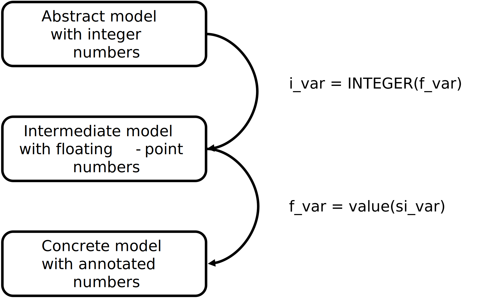

Event-B refinement in presence
of data measures
EBRP-ANR meeting
IRIT-ENSEEIHT, Toulouse, 8-9 July 2024
IRIT-ENSEEIHT, Toulouse, 8-9 July 2024

A simple example
-
System that continuously calculates a moving object's speed

-
Analysing two functional properties:
-
PROP-1 : the speed of the moving object is equal to the
$distance\_travelled$
divided by the$measured\_time$($v = d/t$). -
PROP-2 : when the
$distance\_travelled$is strictly positive, the$speed$
of the moving object must also be strictly positive.- the object moves when its
$speed$is different from zero.
- the object moves when its
-
PROP-1 : the speed of the moving object is equal to the
The first approach
- A simple example in a single Event-B model/machine.
-
The obtained Event-B machine is built using two Event-B theories:
- Floating-point numbers theory
- International System of Units theory
The Event-B model
MACHINE mch_car_speed
...
INVARIANTS
@inv1: distance_travelled $\in$ SI_MEASURE_Type(METRE_UNIT)
@inv2: measured_time $\in$ SI_MEASURE_Type(SECOND_UNIT)
@inv3: speed $\in$ SI_MEASURE_Type(METRE_PER_SECOND_UNIT)
@inv4: starting_position $\in$ SI_MEASURE_Type(METRE_UNIT)
@inv5: starting_time $\in$ SI_MEASURE_Type(SECOND_UNIT)
@PROP-1: speed SI_EQ distance_travelled SI_DIV measured_time
@PROP-2: distance_travelled SI_GT MEASURE(F0,METRE_UNIT) $\mathbin\Rightarrow$ speed SI_GT MEASURE(F0,METRE_PER_SECOND_UNIT)
EVENTS
...
get_starting_point $\mathrel{\widehat=}$
any p t
where
@grd1: p $\in$ SI_MEASURE_Type(KILO_METRE_UNIT)
@grd2: t $\in$ SI_MEASURE_Type(SECOND_UNIT)
then
@act1: starting_position $:=$ SI_CONVERT(METRE_UNIT, p)
@act2: starting_time $:=$ t
end
...
...
get_speed $\mathrel{\widehat=}$
any p t
where
@grd1: p $\in$ SI_MEASURE_Type(METRE_UNIT) $\land$ p SI_GT starting_position
@grd2: t $\in$ SI_MEASURE_Type(SECOND_UNIT) $\land$ t SI_GT starting_time
then
@act1: distance_travelled $:=$ p SI_MINUS starting_position
@act2: measured_time $:=$ t SI_MINUS starting_time
@act3: speed $:=$ (p SI_MINUS starting_position) SI_DIV (t SI_MINUS starting_time)
end
END
generated and proven POs
-
All POs are green but :
- we get a lot of proof obligations
- the proof of each of them was interactive
- each proof needs several steps
-
At the same time, we treat :
- the system properties
- the data measurement annotations
Refinement is an excellent solution to decompose a complex proof.
The refinement based approach

The abstract model
MACHINE mch_1
...
INVARIANTS
@inv1: i_distance_travelled $\in$ $\mathbb N$
@inv2: i_measured_time $\in$ $\mathbb N_1$
@inv3: i_speed $\in$ $\mathbb N$
@inv4: i_starting_position $\in$ $\mathbb N$
@inv5: i_starting_time $\in$ $\mathbb N$
@PROP-1: i_speed $=$ i_distance_travelled $\div$ i_measured_time
EVENTS
...
get_speed $\mathrel{\widehat=}$
any i_p i_t
where
@grd1: i_p $\in$ $\mathbb N$ $\land$ i_p $>$ i_starting_position
@grd2: i_t $\in$ $\mathbb N$ $\land$ i_t $>$ i_starting_time
then
@act1: i_distance_travelled $:=$ i_p $-$ i_starting_position
@act2: i_measured_time $:=$ i_t $-$ i_starting_time
@act3: i_speed $:=$ (i_p $-$ i_starting_position) $\div$ (i_t $-$ i_starting_time)
end
END
The refinement model
MACHINE mch_2 REFINES mch_1
...
INVARIANTS
@inv1: f_distance_travelled $\in$ PFLOAT_Type
@inv2: f_measured_time $\in$ PFLOAT1_Type
@inv3: f_speed $\in$ PFLOAT_Type
@inv4: f_starting_position $\in$ PFLOAT_Type
@inv5: f_starting_time $\in$ PFLOAT_Type
@PROP-2: f_distance_travelled gt F0 $\mathbin\Rightarrow$ f_speed gt F0
@glueing-1: INTEGER(f_distance_travelled) $=$ i_distance_travelled
...
EVENTS
...
get_speed $\mathrel{\widehat=}$
any f_p f_t
where
@grd1: f_p $\in$ PFLOAT_Type $\land$ INTEGER(f_p) $>$ INTEGER(f_starting_position)
@grd2: f_t $\in$ PFLOAT_Type $\land$ INTEGER(f_t) $>$ INTEGER(f_starting_time)
with
INTEGER(f_p) $=$ i_p $\land$ INTEGER(f_t) $=$ i_t
then
@act1: f_distance_travelled $:=$ f_p minus f_starting_position
@act2: f_measured_time $:=$ f_t minus f_starting_time
@act3: f_speed $:=$ (f_p minus f_starting_position) div (f_t minus f_starting_time)
end
END
The annotated model
MACHINE mch_3 REFINES mch_2
...
INVARIANTS
@inv1: si_distance_travelled $\in$ SI_MEASURE_Type(METRE_UNIT)
@inv2: si_measured_time $\in$ SI_MEASURE_Type(SECOND_UNIT)
@inv3: si_speed $\in$ SI_MEASURE_Type(METRE_PER_SECOND_UNIT)
@inv4: si_starting_position $\in$ SI_MEASURE_Type(METRE_UNIT)
@inv5: si_starting_time $\in$ SI_MEASURE_Type(SECOND_UNIT)
@glueing-1: value(si_distance_travelled) $=$ f_distance_travelled
...
EVENTS
...
get_speed $\mathrel{\widehat=}$
any si_p si_t
where
@grd1: si_p $\in$ SI_MEASURE_Type(METRE_UNIT) $\land$ INTEGER(value(si_p)) $>$ INTEGER(value(si_starting_position))
@grd2: si_t $\in$ SI_MEASURE_Type(SECOND_UNIT) $\land$ INTEGER(value(si_t)) $>$ INTEGER(value(si_starting_time))
with
value(si_p) $=$ f_p $\land$ value(si_t) $=$ f_t
then
@act1: si_distance_travelled $:=$ si_p SI_MINUS si_starting_position
@act2: si_measured_time $:=$ si_t SI_MINUS si_starting_time
@act3: si_speed $:=$ (si_p SI_MINUS si_starting_position) SI_DIV (si_t SI_MINUS si_starting_time)
end
END
generated and proven POs
-
All POs are green with :
- a lot of proof obligations
- some proofs were done automatically
- and some were interactives
- each interactive proof needs less steps than the first approach